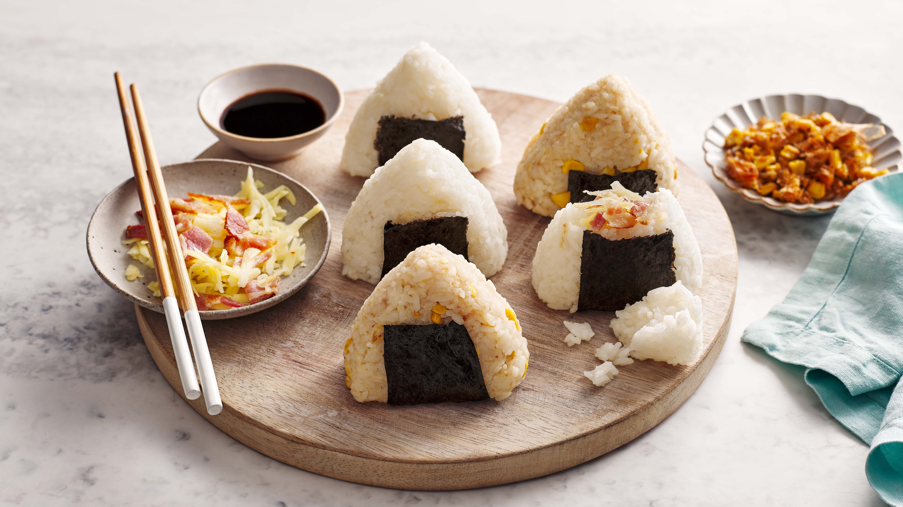

Onigiri (お握り)

Ingredients
- 2 cups cooked rice (short/medium grain)
- 2 sheets nori sheets (cut to 2-3 inch strips)
- 1/4 cup furikake
- sea salt
Directions
-
Step 1
Shape by hand: Wet your hand with water and rub them together with a pinch of salt. Take about ⅓ to ½ cup of warm rice in your hands. If adding the filling, create an indentation and add about 1 tablespoon. Using both hands, firmly press the rice into a triangular shape encasing the filling.
Shape with mold: Spray a bit of water inside the onigiri mold and add a pinch of salt. Fill the mold with the appropriate amount of rice and firmly press to create your shape. If adding the filling, reserve half the rice to place on top of the filling and then press down firmly on the mold.
2 cups cooked rice,sea salt
-
Step 2
Season with Furikake: Press the onigiri into the furikake or sprinkle the furikake on top. 1/4 cup furikake
-
Step 3
Nori Wrapper
Wrap the onigiri with a strip of nori seaweeed right before seriving to keep it crispy.
Orginal recipe at https://drivemehungry.com/onigiri-japanese-rice-balls/